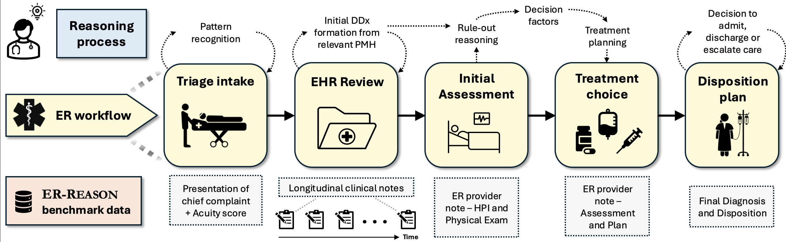

A Benchmark Dataset for LLM-Based Clinical Reasoning in the Emergency Room
Advancing the evaluation of clinical reasoning in emergency care

Large language models (LLMs) are increasingly applied to the field of medicine, but most benchmarks focus on narrow, exam-style medical question-answering rather than the evaluation of full clinical reasoning.
ER-REASON captures the end-to-end ER decision-making pipeline, and is designed to test how well LLMs can approximate the complex, real-world reasoning of clinicians in a high-stakes settings.
Key Components
Dataset
- Contains de-identified longitudinal notes from 3,984 patients across 3,984 ER encounters, totaling 25,174 clinical notes.
- Diverse note types: discharge summaries, progress notes, imaging reports, consult notes, echocardiography reports, and ER provider documentation.
Workflow-Aligned Tasks
This benchmark is structured around five key stages of the emergency room workflow, allowing realistic evaluation of reasoning at each stage:
- Triage Intake: Initial review of patient presentation and acuity scoring
- Assessment: Summarization of patient history in longitudinal notes
- Treatment Planning: Assessment of differential diagnoses and clinical decision factors
- Disposition: Determination of whether the patient should be discharged, admitted, observed, or transferred
- Final Diagnosis: Formulation of the final patient diagnosis
Physician-Authored Rationales
- Includes 72 expert-authored rationales explaining their clinical decision-making process.
- Provides a unique "gold standard" for evaluating reasoning in medical decisions, which is often missing from traditional EHR data.
This benchmark is a significant step forward in evaluating the real-world applicability of LLMs in emergency care by moving beyond factual recall to assess true clinical reasoning, pattern recognition, and decision-making under realistic conditions.